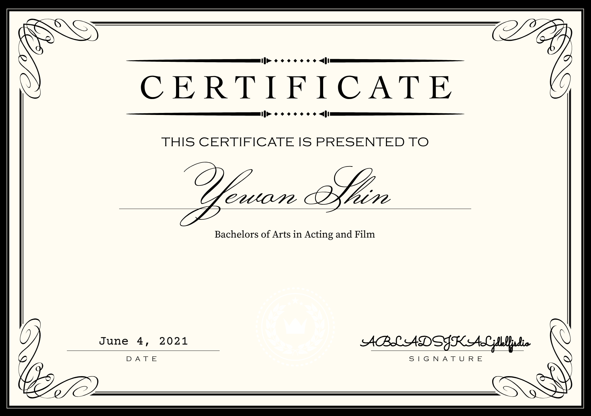
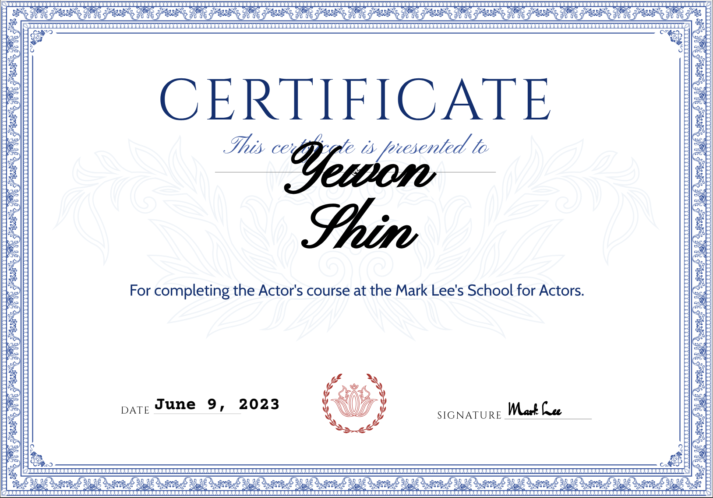
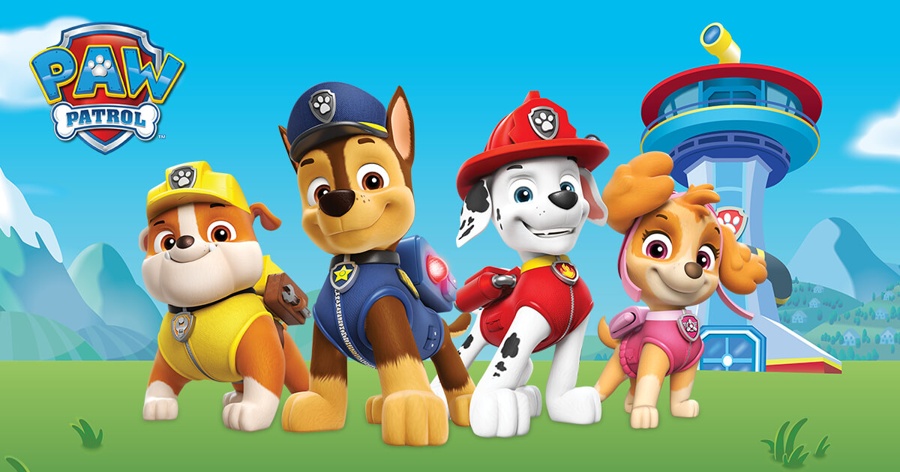
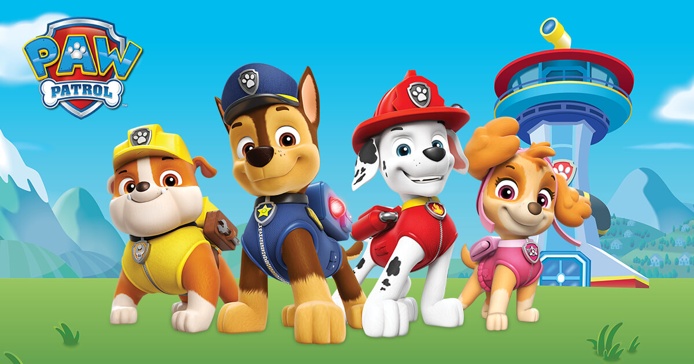
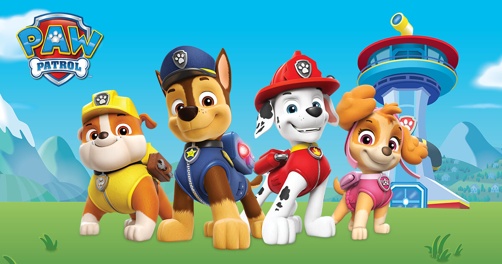
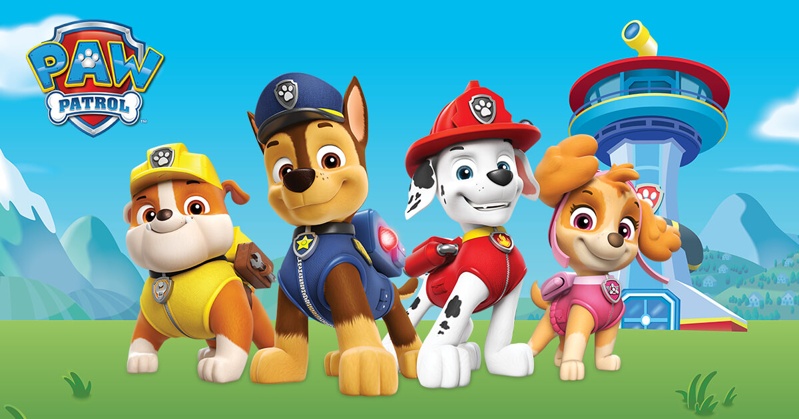

Portfolio


 

Ever since I was young, I discovered that I had a curiosity and passion for film. Just seeing how the actors and actresses would suddenly adapt to their roles and become whole new people was so intruiging to me. I found myself rewatching movies over and over again, not for the plot, as most kids would, but to study how these characters would come to life through the cast members. I even found voice acting interesting, watching how a certain change in one's voice could bring out a whole new person, and how one human being could produce so many different voices.
Following my interests, I begged and begged my parents to start me up in acting. By this time, I was around 8 years old. When I hit 10 years old, I had many experiences with acting in commericals and was able to get signed into an acting agency. Since then, I have been working hard, continuously taking lessons so that I can become a better actress as my career continues on. Since I have taken up small roles in all different kinds of film, up to this point in my life, I want to reach higher and get casted as a lead role in the near future. I am continuing to work tremendously hard in order to get to that point, but it still is one of my biggest dreams.
I have acted in the following commericals and shows: Crest Toothpaste, Charmin Toilet Paper, Dawn Dish Soap, Gain Laundry Detergent, Paw Patrol, Bubble Guppies, and Bridgerton, just to name a few. I have the support of my very loving friends and family that have been with me throughout this journey and I hope they will continue to support me as I go further into my career and passion.
• Endangered Human #1
• Voiced as a man: I had to use deeper voice to match the image
• Voiced the duck mascot
• Went in the studio consistently for recording sessions
• Utilized a higher pitch voice
• NPC #4
• Interacted with many new people that I was unfamiliar with and performed as if we had known each other for years
• Was very teachable: I took all advice and fixed up any mistakes right away
